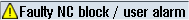

The channel status, active program control, and channel operating messages are displayed.
The machine manufacturer settings determine which program controls are displayed.
 | Machine manufacturer Please observe the information provided by the machine manufacturer. |
Channel state
Display | Meaning |
|---|
| | If several channels are present on the machine, the channel name is also displayed. If only one channel is available, only "Reset" is displayed as the channel status. With touch operation, you can change the channel here. |
| | The program was canceled with "Reset". |
| | The program is executed. |
| | The program has been interrupted with "Stop". |
Program control
Display | Meaning |
|---|
 | PRT: No axis motion DRY: Dry run feedrate M01: Programmed stop 1 M101: Programmed stop 2 (name varies) SB1: Single block, coarse (program stops only after blocks which perform a machine function) SB2: Calculation block (program stops after each block) SB3: Single block, fine (program also stops in cycles only after blocks which perform a machine function) CST: Configured stop (program stops at the positions relevant to stop that you defined before the program started) |
Channel operational messages
Display | Meaning |
|---|
|  | Stop: An operator action is usually required. |
| | Wait: No operator action is required. |
| | Safety: An operator action is usually required, e.g. closing the protective door. |